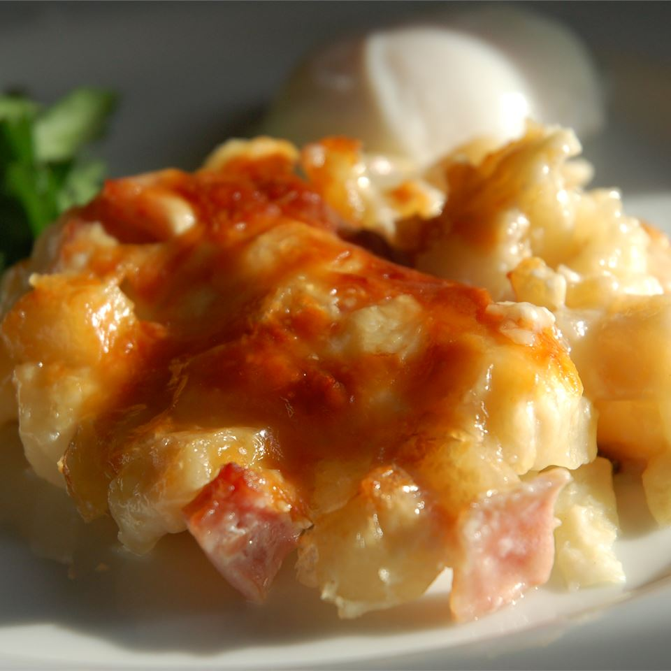

Cheesy Ham and Potato Casserole

Ingredients
-
1 (32 ounce) package frozen hash brown potatoes
-
8 ounces cooked, diced ham
-
2 (10.75 ounce) cans condensed cream of potato soup
-
1 (16 ounce) container sour cream
-
2 cups shredded sharp Cheddar cheese
-
1 1/2 cups grated Parmesan cheese
Steps
-
Preheat oven to 375 degrees F (190 degrees C). Lightly grease a 9x13 inch baking dish.
-
In a large bowl, mix hash browns, ham, cream of potato soup, sour cream, and Cheddar cheese. Spread evenly into prepared dish. Sprinkle with Parmesan cheese.
-
Bake 1 hour in the preheated oven, or until bubbly and lightly brown. Serve immediately.